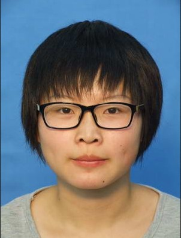

| 姓名 | 周巧妍 | 学校 | 哈尔滨工业大学 |  |
| 性别 | 女 | 专业 | 计算机科学与技术 | |
| 家庭所在地 | 浙江省宁波市 | 教育程度 | 本科（2017届） | |
| 手机 | 13091710687 | 邮箱 | zhouqiaoyan0313@163.com | |
| git地址 | https://github.com/zhouqianyan0313/ | |||
| 应聘职位 | 前端工程师 |
| 语言 | 了解程度 | 熟练程度(A-B-C) |
| C | 能用C语言实现基本数据结构和基本算法 | A |
| Python | 较熟悉Django，搭建网站 | A- |
| html、css、javascript | 了解基础语法并实践（git中的项目，百度前端学院，慕课视频，牛客的题） | A- |
| MySQL | 能用SQL语句建立数据库和表以及简单地查询 | B |
| 其他 | Processing：写过3个礼拜，java（安卓）：能利用接口和demo进行简单修改 | C |
| 时间 | 项目名称 | 职责 | 项目简介 |
| 2016/7/4-2016/7/21 | 全国公交查询安卓APP | 组长，负责分工和整合，实现用户管理模块及修改demo实现所需功能 | 主要利用聚合数据提供的接口和高德地图的demo，完成天气查询、公交线路查询、公交路线查询、周边查询和公交站点查询功能。利用SQLite存储用户，利用sharepreferences实现自动登陆功能。本项目由于时间短，不涉及服务器端。 https://github.com/zhouqianyan0313/bus_android |
| 2016/1-2016/2 | 电动滑板宣传 | 全权负责 | 使用Django建立宣传网站，展示活动内容（包括图片和文字介绍）和公司及主要成员基本信息，并提供留言功能。管理员可以通过admin进行管理。 https://github.com/zhouqianyan0313/huabanzqy |
| 2015/10-2015/12 | 教师信息管理系统 | 主要负责设计整体框架（models等）和大部分功能的实现，测试时发现的问题由我解决。 | 使用Django建立教师信息管理系统，主要实现教师检索、推荐和预约功能。教师登陆时能收到学生的预约信息并有权修改。 https://github.com/zhouqianyan0313/teacherzqy |
我学习前端，最初是做网站的需要，想要有好看舒服的页面。我的美术功底几乎没有，审美差强人意，但我还是想要把美的东西分享给大家。每写一点东西都很满足，可以和刚开始学习编程调试成功的感觉媲美。高考结束填志愿，我先选择了计算机专业，然后选择学校。三年过了，我不后悔。敲代码，很快乐啊。bug啊，来互相伤害啊。